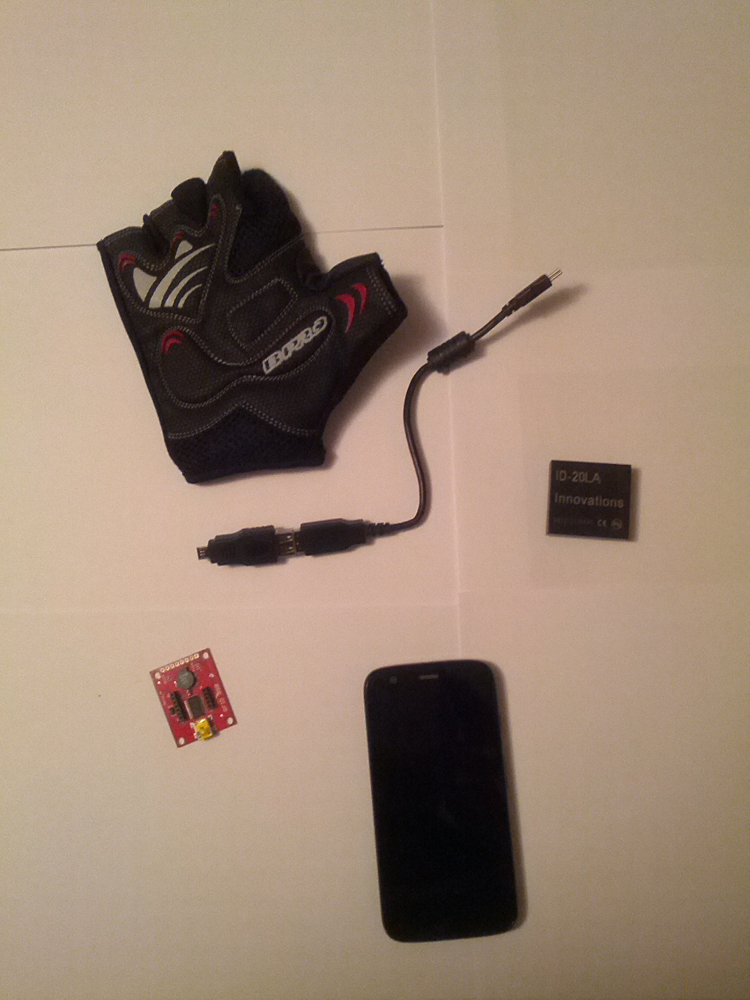

What's Jamsa?
Jamsa Project is a blind helper system that aims to allow blind people being more aware of their environment. To achive this we have developed a smart glove that interacts with RFID tags.
The glove communicates with an Android device jamsa-mobile that requests the tag information to a server jamsa-server and executes an action.
Motivation
It is already the XXI century and blind people still only use a white cane to know their environment. The technology already exists so we only have to put everything together.
Components
We have used:
- ID-20LA RFID sensor. RFID sensor with integrated antenna. [$34.95]
- SEN-09963. USB towith FTDI chip [$24.9]
- Mobile device (any Android device with 3.1 or higher will do it).
- Theses have been used for testing: Samung Galaxy S3/Samsung Galaxy Nexus/Nexus 5
- OTG Cable [$1.92]
- Gloves :) [$17]
- Linux server with a REST API developed in perl and the web framework Dancer.
The total cost of the prototype is $90.
PoC
This is the demo we created for the Hack For Good 2014 challenge.
Sorry, Spanish only.
Next Steps
We have only deployed a PoC to check that the idea is feasible so the next steps would be:
- Design and create our own boards for all the components to reduce the cost
- Secure the API on the server (authentication)
- Explore the possibility of communication between the glove and the mobile phone via Bluetooth/Wireless links
- Integration between the glove and the electronic components to make it feel as comfortable as possible